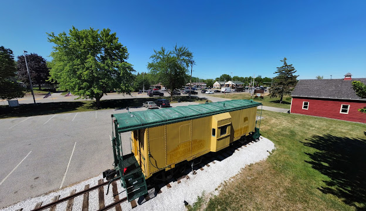
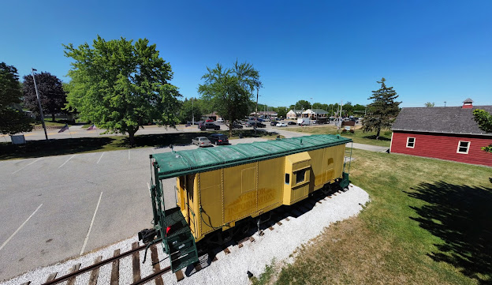
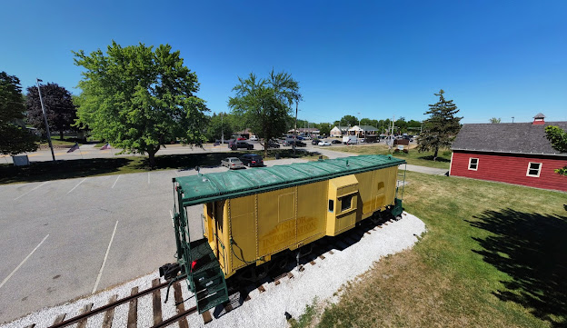

Menomonee Falls, Wisconsin, has a storied past that began with Native American tribes settling in the area for its fertile land and resources. European settlers arrived in the 19th century, establishing sawmills along the Menomonee River, which fueled early industrial growth. By the late 1800s, the village was incorporated, witnessing a boom in industries like paper manufacturing and metalworking. Waves of immigrants from Europe contributed to its cultural diversity. Throughout the 20th century, Menomonee Falls evolved into a suburban community, known for its quality schools and amenities. Today, the village balances its rich history with modern development, preserving its downtown while accommodating new businesses and residents. With a strong sense of community and pride in its heritage, Menomonee Falls remains a thriving and welcoming place to live.
